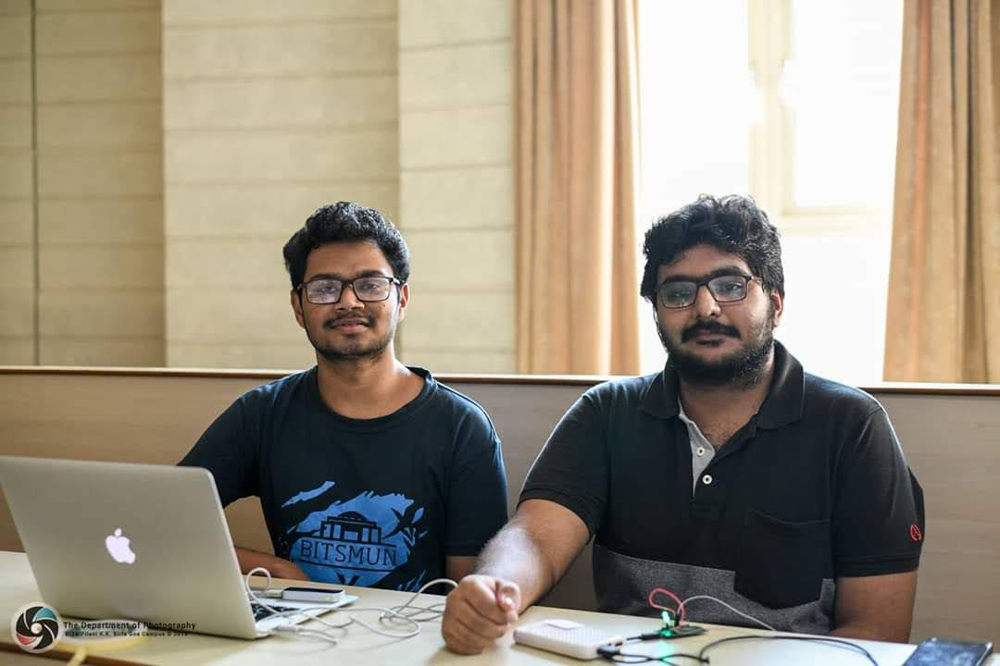

Automation and smart computing have opened up immense possibilities in a variety of segments. With the advancements in Internet of Things (IoT), we can take advantage of these capabilities to provide far better experiences. In this project, we explored ways to enhance smart home experience, specifically the operation of household devices, with ubiquitous computing.
Problem Statement
How can we make smart home experience intuitive and natural?
___
What is Leap Motion Controller?
Leap Motion Controller is a sensor based device that recognises hand gestures and finger motions without any direct contact. The data captured by the hardware is sent to a computing device via USB, where it is analysed and the output is generated. The technology is fairly accurate in identifying distinct gestures.
By taking advantage of Leap Motion Controller's technology, we developed a program on the host device to send the data to Firebase real-time database. On the other end, we programmed a Node MCU chip to operate different LEDs based on the logic in database.
What did we achieve?
By performing this experiment, we were able to successfully transfer the data captured from Leap Motion Controller to a smart home appliances. Thus, we could effectively use hand gestures to control the devices almost instantly.

Team during the showcase
Viability
Further Scope
___
Leap Motion Controller can be used to automate smart home appliances and our implementation provides an easy, intuitive solution to control them. With dedicated efforts and collaboration, multi-purpose models can be configured with Leap Motion Controller to provide smart home setups suitable for everyday use.